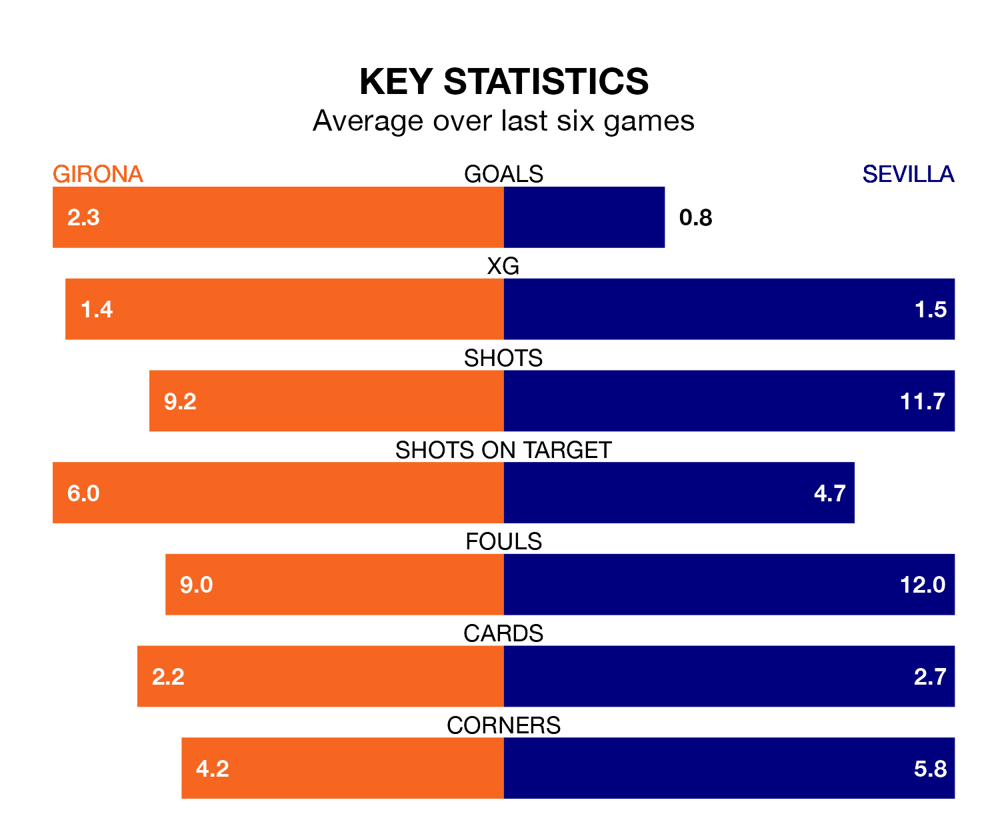

Mid-season relegation candidates Sevilla face a challenge away against high-flying Girona at Estadi Municipal de Montilivi on Sunday.
Sevilla are 17th in the La Liga table, and have picked up three wins and seven draws in their 20 games to date.
Girona, meanwhile, are top of the standings with 49 points, having won 15 and drawn four.
With 46 goals in 20 games so far this season, Girona are the league's highest scorers with 2.3 goals per game. And they are conceding fewer than average, letting in 24 goals at a rate of 1.2 per game.
Sevilla, meanwhile, are below average scorers, with 1.2 goals per game, compared to a league average of 1.3. They have conceded 1.5 goals per game.
The hosts are in good form in La Liga, with four wins and two draws from their last six games.
With a win and five losses over that period, the away side's form is much worse – they have taken three points from 18, compared to Girona's 14.
In the last 10 years, Girona and Sevilla have played each other on seven occasions. Girona won four of them and Sevilla three.
On average, Girona scored 1.0 goal and Sevilla 0.9 in those matches.
Their last meeting was on August 26, when Girona won 2-1 away.
In Artem Dovbyk, Girona have one of the league's most on-form strikers so far this season. He has notched 11 goals in 19 appearances, to sit fourth in the scoring charts.
His goal rate of one every 107 minutes is much quicker than that of Youssef En-Nesyri, Sevilla's top scorer with a goal every 238 minutes, and a total of five goals in 17 games.
Girona's last match was on January 14, a 0-0 draw against Almería.
Sevilla lost 3-2 against Deportivo Alavés last time out, on January 12, with Lucas Ocampos and Rafa Mir on the scoresheet.
Updated: 14:53 (UTC), 16/01/24